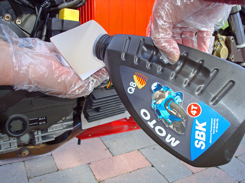
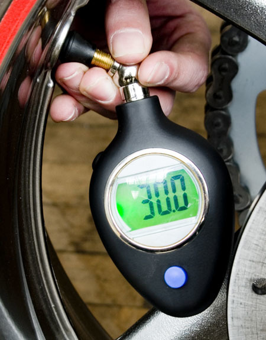
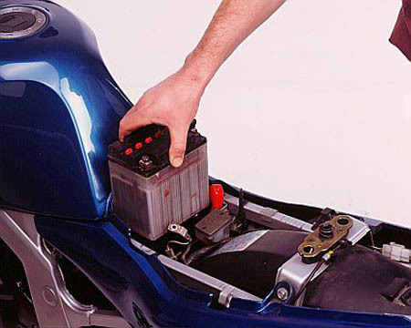
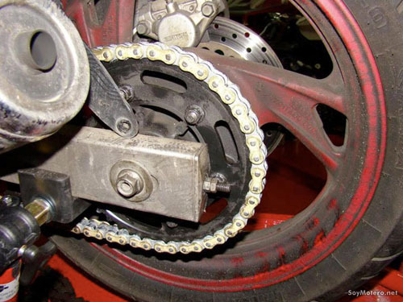

Esta es una de las operaciones mas básicas en el mundo de la moto, tanto que en muchos modelos ni siquiera es
necesario mancharse, ya que el nivel se aprecia a través de un ojo de buey instalado en el cárter o en el
depósito del aceite. En caso de necesitar rellenar, tendremos que seguir las instrucciones incluidas en el
manual de la moto. Ahí nos deberían indicar el tipo de aceite a utilizar. Pero siempre hay que tener cuidado
de no rebasar el máximo indicado, ya que si es malo llevar poco aceite, también es malo llevar demasiado. De
todas maneras si nuestra moto consume mucho aceite puede ser síntoma de una avería mas grave, con lo que será
necesario llevarla a un taller para que la revisen a fondo.

También podemos liarnos la manta a la cabeza y realizar nosotros mismos el cambio de aceite y su filtro. Para
esto primero necesitaremos averiguar cuanto aceite lleva el cárter y de que tipo, ya que nuestro motor está
diseñado para funcionar con un tipo especifico de aceite y si lo cambiamos podemos incluso llegar a estropearlo.
Hay que tener en cuenta que el aceite usado hay que llevarlo a un punto de recogida de material contaminante,
ya que no se puede tirar ni por el desagüe ni a la basura. Y realizar la operación siempre siguiendo las
instrucciones del manual. Si no lo tenemos, seguro que en Google podremos encontrar algún articulo que
explica como hacer esta operación en nuestra moto.
Comprobar las ruedas
Las ruedas son el elemento que nos mantiene en contacto con el asfalto, y son mucho mas importantes de lo que
la gente cree. Unas ruedas excesivamente gastadas, deshinchadas o excesivamente hinchadas son casi tan peligrosas
como una mancha de aceite en el asfalto. La presión debería ser la indicada en las especificaciones del neumático,
aunque se permite cierta variación para adaptarlas al estilo de conducción de cada uno. La presión siempre se
debe comprobar en frío, ya que al calentarse el aire que llevan dentro aumenta la presión y nos falsea el dato.

Un neumático excesivamente desgastado también es peligroso. La ley dice que no puedes llevar menos de 1,6 mm
de profundidad en el dibujo, pero en muchos casos la gente los estira hasta casi que se ven las lonas que lo
forman, jugándose el tipo por ahorrar unos euros. Por último un neumático con dibujo y presión adecuada puede
seguir siendo un peligro si la goma está "acartonada" cosa que se comprueba fácilmente intentando meterle la
uña, si se marca vamos bien, si es imposible o la cubierta presenta grietas y síntomas de haber perdido elasticidad,
lo mejor es tirarlo y montar una cubierta nueva. Esto también hay que hacerlo en un taller especializado, porque los
neumáticos usados han de ser reciclados.
Comprobar la batería
Dependiendo de lo vieja que sea tu batería puede necesitar una recarga o simplemente reponer el líquido a su nivel.
Este líquido es agua destilada, nunca ácido ni nada parecido, ya que este agua al mezclarse con el material que hay
dentro de la batería recupera sus propiedades y "revive" la batería.

Si no eres muy manitas, lo mejor es que lleves la moto a un taller y que ellos te recarguen la batería o te la
sustituyan por una nueva, ya que el liquido contenido en su interior es una mezcla de agua destilada y ácido sulfúrico
que allí donde cae quema para siempre, sea tu ropa, tu piel o en las chapas de tu preciada moto. Mejor que no nos
arriesguemos a una quemadura química.
Comprobar las pastillas de freno y la cadena
La cadena debe estar tensada de acuerdo a lo que dice el manual de la moto. Además hay que comprobar que no esté estirada
o desgastada, lo que implicaría que hay que sustituirla. Si eres capaz de despegar los eslabones de la corona trasera es
síntoma inequívoco de que hay que cambiar todo el conjunto, y esto debería hacerlo un taller especializado, porque seguro
que te van a hacer falta herramientas que es raro que tengas en casa.

Las pastillas de los frenos también hay que revisarlas de vez en cuando. Para hacer esto basta con fijarse a través de
los huecos que suele haber en las pinzas, si eres capaz de ver 4 o 5 mm de ferodo es que están en uso, si bajas de esa
medida o dejas de ver unas ranuras que llevan las pastillas para controlar su desgaste, ve a cambiarlas cuanto antes,
porque si llega a tocar el disco la parte metálica de las pastillas puede dañar este y entonces por querer ahorrarte
unos euros estirando demasiado un material consumible te va a costar mucho mas.